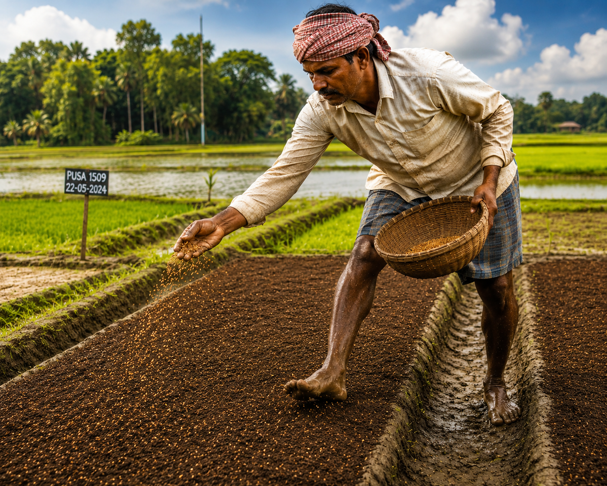
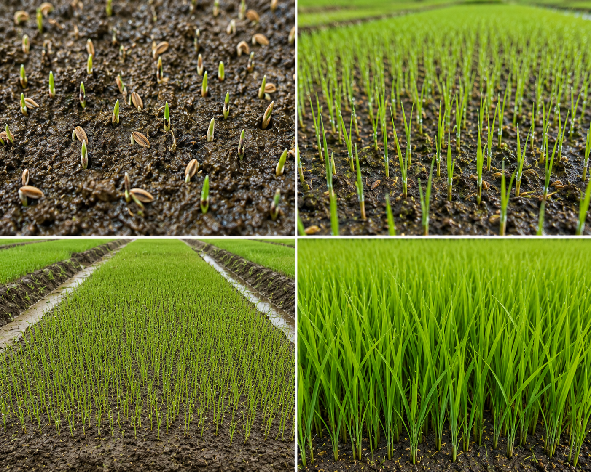

Nursery Preparation
Preparing the rice nursery
A healthy rice nursery is crucial for strong seedlings. The Ahero process starts with fertile land, clean beds, appropriate flooding and constant moisture.
- Select fertile land.
- Clear bushes and weeds.
- Dig and level nursery bed.
- Add manure.
- Flood nursery lightly.
- Sow pre-germinated seeds.
- Cover lightly with soil.
- Maintain moisture.
Nursery images
Visual guide to seedbed setup



Video Demonstration
Nursery preparation process
Learn the key steps to prepare a rice nursery and maintain optimal moisture for emerging seedlings.

Watch a step-by-step video of nursery bed preparation and seed placement used in Ahero.